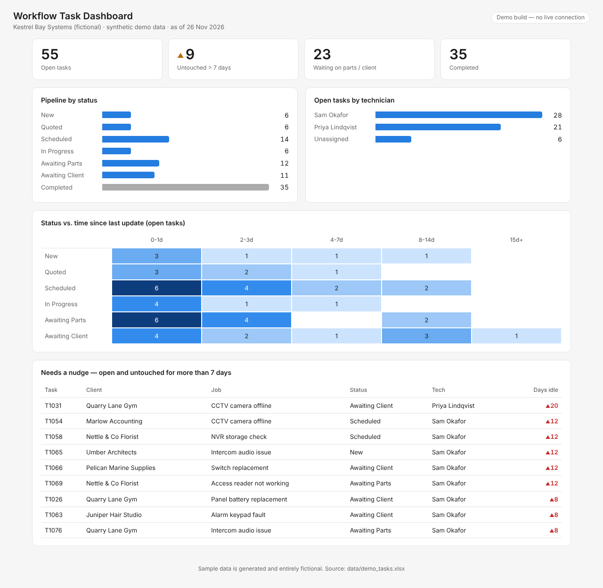

I turn messy operational data into clear daily actions.
Internal dashboards and automation for service and operations teams: less spreadsheet shuffling, fewer things falling through the cracks. Everything below runs on sample data and can be tried locally.
Both demos use a fictional company (“Kestrel Bay Systems”) and generated data. No client information is involved.

Workflow Task Dashboard
Python
Flask
openpyxl
Vanilla JS
Problem
Open jobs in a field-service system were spread across status views, so stalled work and uneven technician loads only showed up when someone complained.
What I built
A single-page dashboard showing the pipeline by status, open work per technician, and a status-versus-time-since-update heatmap. A short list of tasks untouched for over a week tells the coordinator who to chase.
Design choices
One accent colour for magnitude, a warning marker only where action is needed, and hover details on every bar and cell. It follows the system light/dark theme.
Data
Reads a spreadsheet export (the original also had a live API source). The demo ships with generated sample data.
Daily monitoring reports arrive as separate files. Spotting a site that keeps faulting meant scanning many tabs by hand and remembering what had been seen before.
What I built
A ranked queue of sites that need attention. Each card shows how many of the last 14 days a site was flagged, what keeps recurring, and a plain recommendation: tech visit, keep watching, or nothing.
Design choices
A card queue replaced a dense table: one site at a time, with a clear next step and a visible “reviewed” count so the daily pass has an end.
Data
Reads a master workbook with one tab per report type. Recurrence rules (days flagged, severity) are plain constants at the top of app.py.
More projects coming. Each one gets the same treatment: synthetic data, a one-click local demo, and a short write-up of the problem it solved.
Run a demo locally
Python 3.10+ on Windows, macOS or Linux.
git clone https://github.com/[YOUR-GITHUB]/[REPO].git
cd [REPO]/task-dashboard
pip install -r requirements.txt
python app.py # http://127.0.0.1:5001
# or on Windows: double-click run.bat
To try your own data, set DEMO_XLSX to a spreadsheet with the same columns as the sample file in data/.
How I work
Start from the daily question the person is trying to answer, then cut everything that doesn’t help answer it. Prefer plain, readable code and spreadsheets people already use over heavy infrastructure. Keep real data out of anything shareable by designing demos around generated data from the start.